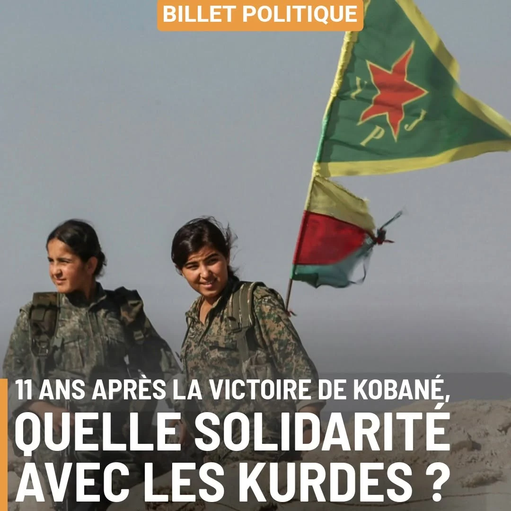

Publication relayée par le PCF 79
Kobané. Fabien Gay revient sur la solidarité avec les Kurdes de Syrie
Date de mise à jour indiquée par Facebook · 28 janvier 2026
Texte de la publication · Fabien Gay
11 ans après la victoire de Kobané, quelle solidarité avec les Kurdes ?
Alors que Kobané a été le symbole d’une résistance populaire massive face à la barbarie de Daech, les Kurdes de Syrie sont à nouveau attaqués et assiégés d’Alep à Kobané. Organisés autour des Forces démocratiques syriennes (FDS) et de leur commandant Mazloum Abdi, ces hommes et ces femmes sont désormais livrés à une insécurité permanente, sans eau, sans électricité, engendrant une nouvelle tragédie humaine.
Ils sont menacés, d’une part, par les offensives répétées de l’armée turque de Recep Erdogan qui poursuit, au-delà de ses frontières, une guerre totale contre toute forme d’existence politique kurde. Ils sont pris, d’autre part, dans les jeux de pouvoir d’un régime syrien post Bachar al-Assad, prêt à reprendre le contrôle sans garantir ni droit ni protection. Ils sont enfin sacrifiés par les grandes puissances — États-Unis, Russie, puissances européennes — qui arbitrent le sort des peuples au gré de leurs intérêts militaires et diplomatiques.
La récente annonce d’un accord de cessez-le-feu portée par Ahmed al-Charra, président syrien par intérim, présenté comme une étape vers une stabilisation partielle de certaines zones du nord de la Syrie, avec l’intégration d’institutions civiles et militaires kurdes au sein de l’Etat syrien, illustre une fois de plus cette diplomatie à géométrie variable. On négocie, on communique, on se félicite parfois. Puis quelques jours après, on attaque.
Hier, les Kurdes étaient encensés comme des alliés indispensables, comme un rempart face à l’Etat islamique. Aujourd’hui, ils sont devenus une monnaie d’échange dans les discussions entre Ankara, Damas, Moscou, Washington — et désormais dans des arrangements locaux qui, sous couvert de désescalade, consacrent surtout le rapport de forces.
À Kobané, ce sont des civils qui vivent sous la menace des drones, des bombardements, des pénuries. Des femmes, des hommes, des enfants qui continuent pourtant de faire vivre une expérience politique singulière au Moyen-Orient : démocratie locale, parité femmes-hommes, pluralisme religieux et ethnique. L’expérience du Rojava, imparfaite mais profondément émancipatrice, a montré qu’une autre voie était possible, loin des dictatures et des intégrismes.
Cette alternative dérange. Elle dérange Ankara, parce qu’elle contredit la politique de répression menée contre les Kurdes en Turquie. Elle dérange les puissances régionales, parce qu’elle échappe aux logiques autoritaires classiques. Elle dérange aussi les grandes démocraties occidentales, parce qu’elle révèle l’hypocrisie de leurs doubles discours sur les droits humains.
Depuis sa prison d’Imrali, Abdullah Öcalan, leader kurde et figure centrale de cette pensée politique, n’a cessé d’appeler à une solution démocratique et pacifique. Il appelle au dialogue entre les peuples, à la reconnaissance des droits des Kurdes, à une paix durable fondée sur la démocratie locale et la coexistence, non sur les cessez-le-feu de circonstance ni sur la loi des armes. Ces appels, systématiquement ignorés ou étouffés, contrastent cruellement avec la brutalité des politiques menées sur le terrain.
Pendant que les Kurdes réclament une reconnaissance politique, l’Europe se tait, se réfugiant derrière des communiqués prudents et la poursuite de coopérations militaires et économiques avec la Turquie.
La situation impose de condamner clairement les agressions contre les Kurdes de Syrie, d’exiger leur protection effective, de reconnaître leurs représentants politiques et d’entendre enfin les appels à la paix.
Kobané nous regarde. Elle nous interroge sur la valeur réelle de nos principes lorsqu’ils entrent en conflit avec les calculs géopolitiques. Elle nous rappelle que la paix ne se décrète pas dans des accords sans peuples, mais se construit avec eux, dans la justice et la solidarité.

Sources
Fabien Gay · publication relayée par le PCF 79 · bibliothèque Facebook · AR-0002-FB-00888
À lire aussi · Le PCF demande l’arrêt de l’offensive contre la population d’Alep